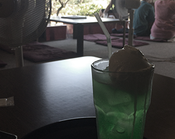
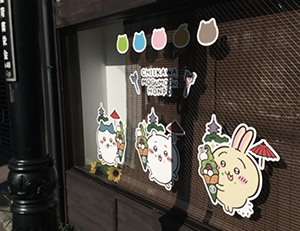
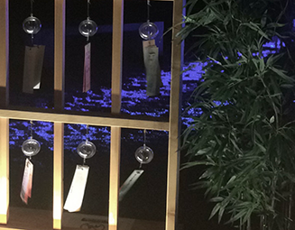
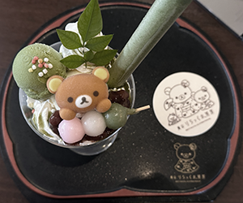

8/14 ~ 8/15 二日の京都旅
오봉 방학을 이용하여 혼자서 교토 여행을 다녀왔다. 한 여름의 교토는 엄청 덥고 습한 걸로 악명이 높아서 고민했지만,
오사카까지 와서 교토를 안 가고 떠나기는 너무 아까워서 교토행 여행을 결정하였다.
오사카까지 와서 교토를 안 가고 떠나기는 너무 아까워서 교토행 여행을 결정하였다.

|  |  |  |  |
|
day 1 : 茶房 前田
사보 마에다라고 하는 킷사텐, 에어컨도 없고 선풍기 뿐이었지만 일본 특유의 여름 느낌이 |
day 1 : ちいかわ もぐもぐ本店
평소에 너무 좋아하는 '치이카와'라는 만화의 |
day 1 : 西条 夏祭り
우연히 교토를 방문했던 날에 니시조에서 여름 축제를 했었다. 혼자서 하이볼 마시면서 걸어 |
day 2 : リラックマ カフェ
교토에서 유명한 리락쿠마 카페를 마지막으로 여행을 마쳤다. 파르페나 카레 가격이 너무 |